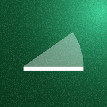

Ajar
Pair with your laptop
On your laptop, click the phone button in Ajar.
Or paste the code
Laptop
Connecting…
Keep this as an app
…
Apps
Connecting…
Keeps it awake
Also while these run
With the lid closed
Settings
Connecting…
Measure the savings
Loading…
This phone
Not updated yet. End-to-end encrypted.